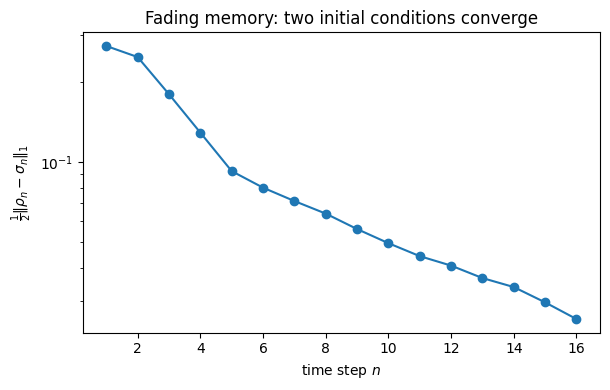

Quantum Reservoir Computing: Where the Nonlinearity and the Memory Come From
A quantum reservoir computer forecasts a time series \(\{s_n\}\) with a fixed quantum dynamics and only a trained linear readout. Two properties make this work, and both look mysterious at first: the readout features are nonlinear in the inputs even though quantum channels are linear maps, and the reservoir has fading memory even though the dynamics is (between injections) unitary and reversible. This notebook derives both, explicitly, for the minimal transverse-field-Ising reservoir of Chapter 7 — turning the chapter’s qualitative sketch into exact formulas that we then check numerically.
The protocol
At each step \(n\) the input \(s_n\) is written into a node qubit, and the whole register is then mixed by a fixed Hamiltonian. Writing \(\hat\rho_{\rm in}(s)\) for the freshly encoded node state, the forward step is \[\hat\rho_n=\mathcal{U}_\tau\!\circ\!\mathcal{E}_{s_n}(\hat\rho_{n-1}),\qquad
\mathcal{E}_{s}(\hat\rho)=\mathrm{Tr}_{\rm node}[\hat\rho]\otimes\hat\rho_{\rm in}(s),\qquad
\mathcal{U}_\tau(\hat\rho)=e^{-i\hat H\tau}\hat\rho\,e^{i\hat H\tau}.\] The readout reads a fixed set of observables \(\langle\hat O_\alpha\rangle_{\hat\rho_n}\) and fits a linear map from them to the target. We use the Chapter-7 reservoir: \(N=3\) qubits, node \(=\) qubit 1, and \(\hat H=J(\hat Z_1\hat Z_2+\hat Z_2\hat Z_3)+h(\hat X_1+\hat X_2+\hat X_3)\), with the amplitude encoding \(|\psi(s)\rangle=\sqrt{\tfrac{1+s}{2}}|0\rangle+\sqrt{\tfrac{1-s}{2}}|1\rangle\) so that \(\langle\hat Z\rangle=s\).
Exercise
Identify the source of nonlinearity and show that after one step every feature has the exact form \(\langle\hat O\rangle_{\hat\rho_1}(s)=a+b\,s+c\sqrt{1-s^2}\), with \(a,b,c\) determined by \(U^\dagger\hat OU\).
Show that after two steps the features depend on both\(s_1\) and \(s_2\) — the reservoir’s memory — and identify what carries \(s_1\) forward.
Derive the fading-memory (echo-state) property: the injection map contracts the trace distance, so two initial conditions converge and the reservoir forgets its past.
Toolbox
Bloch form of the encoding. A pure qubit state is \(\hat\rho_{\rm in}(s)=\tfrac12(\mathbb 1+s\hat Z+\sqrt{1-s^2}\,\hat X)\): \(\langle\hat Z\rangle=s\) is linear, but purity (\(|\vec r|=1\)) forces the transverse component \(\sqrt{1-s^2}\).
Linearity of the channel.\(\hat\rho\mapsto\hat U\hat\rho\hat U^\dagger\) and the partial trace are linear in \(\hat\rho\). So any nonlinearity in \(s\) must come from the encoding, not the dynamics.
Contractivity. The partial trace is trace-distance non-expansive: \(\|\mathrm{Tr}_{\rm node}\hat X\|_1\le\|\hat X\|_1\).
Solution
Where the nonlinearity comes from, and the exact one-step feature
Start from \(\hat\rho_0'=\hat\rho_{\rm in}(s_1)\otimes\hat\rho_{\rm body}\) (fresh node, some body state). After the mixing \(U=e^{-i\hat H\tau}\), a readout observable has expectation \[\langle\hat O\rangle_{\hat\rho_1}=\mathrm{Tr}\!\big[\hat O\,U\hat\rho_0'U^\dagger\big]
=\mathrm{Tr}\!\big[(U^\dagger\hat OU)\,(\hat\rho_{\rm in}(s_1)\otimes\hat\rho_{\rm body})\big].\] Everything except \(\hat\rho_{\rm in}(s_1)\) is fixed, so this is linear in the node state\(\hat\rho_{\rm in}(s_1)\). Trace out the body to define the effective single-node operator \(\hat M=\mathrm{Tr}_{\rm body}[(U^\dagger\hat OU)(\mathbb 1\otimes\hat\rho_{\rm body})]\), expand it in Paulis, \(\hat M=m_0\mathbb 1+m_z\hat Z+m_x\hat X+m_y\hat Y\), and insert the Bloch form of the encoding. Because \(\langle\mathbb 1\rangle=1\), \(\langle\hat Z\rangle=s\), \(\langle\hat X\rangle=\sqrt{1-s^2}\), \(\langle\hat Y\rangle=0\), \[\boxed{\;\langle\hat O\rangle_{\hat\rho_1}(s)=\underbrace{m_0}_{a}+\underbrace{m_z}_{b}\,s+\underbrace{m_x}_{c}\sqrt{1-s^2}.\;}\] The \(\sqrt{1-s^2}\) term — the nonlinearity — is inherited entirely from the purity constraint on the encoding; the linear evolution merely rotates it into every observable through the coefficients \(a,b,c=(m_0,m_z,m_x)\). A single qubit thus already supplies a \(\{1,s,\sqrt{1-s^2}\}\) nonlinear feature family.
Nothing in this argument used the reservoir size: the node is one qubit whatever \(N\) is, so the one-step feature is \(a+b\,s+c\sqrt{1-s^2}\) for a reservoir of any size, with only the coefficients \((a,b,c)\) changing with \(N\), \(\hat H\), and \(\tau\). We verify this holds to machine precision from \(N=3\) up to a \(32\)-dimensional reservoir (\(N=5\)) below.
Two steps: the memory
At the second step the node is overwritten with \(s_2\), but the body is not: \(\hat\rho_1'=\hat\rho_{\rm in}(s_2)\otimes\mathrm{Tr}_{\rm node}[\hat\rho_1]\), and \(\mathrm{Tr}_{\rm node}[\hat\rho_1]\) still carries the \(s_1\)-dependent correlations the first mixing wrote into qubits \(2,3\). Repeating the argument, \(\langle\hat O\rangle_{\hat\rho_2}\) is linear in the node state \(\hat\rho_{\rm in}(s_2)\)and linear in the body state \(\mathrm{Tr}_{\rm node}[\hat\rho_1]\), which is itself of the \(\{1,s_1,\sqrt{1-s_1^2}\}\) form. The two-step feature is therefore a bilinear combination of \(\{1,s_2,\sqrt{1-s_2^2}\}\) and \(\{1,s_1,\sqrt{1-s_1^2}\}\) — it genuinely depends on both inputs, with cross terms \(s_1 s_2\), \(s_1\sqrt{1-s_2^2}\), and so on. Iterating, the feature at step \(n\) is a nonlinear function of the whole recent history, which is exactly what forecasting needs.
Fading memory (the echo-state property)
Memory of the inputs is useful; memory of the initial condition is not — a forecaster must give the same answer regardless of how it was started. The injection map guarantees this. For any two states \(\hat\rho,\hat\sigma\), \[\mathcal{E}_s(\hat\rho)-\mathcal{E}_s(\hat\sigma)=\big(\mathrm{Tr}_{\rm node}[\hat\rho]-\mathrm{Tr}_{\rm node}[\hat\sigma]\big)\otimes\hat\rho_{\rm in}(s),\] because the freshly written node is identical for both. Taking the trace norm and using that it factorizes over the tensor product (\(\|\hat\rho_{\rm in}(s)\|_1=1\)), \[\|\mathcal{E}_s(\hat\rho)-\mathcal{E}_s(\hat\sigma)\|_1=\big\|\mathrm{Tr}_{\rm node}[\hat\rho-\hat\sigma]\big\|_1\le\|\hat\rho-\hat\sigma\|_1,\] the last step being contractivity of the partial trace. The unitary \(\mathcal{U}_\tau\) preserves the trace distance, so a full step is non-expansive, \(\|\hat\rho_n-\hat\sigma_n\|_1\le\|\hat\rho_{n-1}-\hat\sigma_{n-1}\|_1\). The bound is strict whenever the mixing spreads the body difference back onto the node, which the next injection then erases: generic \(\hat H\) therefore drives \(\|\hat\rho_n-\hat\sigma_n\|_1\to0\) geometrically. That convergence is the fading-memory / echo-state property, and it is what a reversible (unitary) reservoir alone could never provide — the irreversible partial trace is essential.
Code
import numpy as npfrom scipy.linalg import expmI=np.eye(2); X=np.array([[0,1],[1,0]],complex); Y=np.array([[0,-1j],[1j,0]]); Z=np.array([[1,0],[0,-1]],complex)def op(single,k,N): M=1for q inrange(N): M=np.kron(M, single if q==k else I)return MN=3; J=1.0; h=0.6; tau=1.2H=J*(op(Z,0,N)@op(Z,1,N)+op(Z,1,N)@op(Z,2,N))+h*(op(X,0,N)+op(X,1,N)+op(X,2,N)); U=expm(-1j*H*tau)def psi_in(s): return np.array([np.sqrt((1+s)/2),np.sqrt((1-s)/2)],complex)def rho_in(s): p=psi_in(s);return np.outer(p,p.conj())body0=np.outer([1,0,0,0],[1,0,0,0]) # |00>_23# (1) exact one-step feature: <O>_{rho1}(s) = a + b s + c sqrt(1-s^2)print("One-step feature is exactly a + b s + c sqrt(1-s^2):")for Oname,O in [("Z2",op(Z,1,N)),("Z3",op(Z,2,N)),("Z1Z2",op(Z,0,N)@op(Z,1,N))]: M=U.conj().T@O@U# effective node operator: Tr_body[ M (I (x) body0) ], then Pauli-decompose on the node Mr=M.reshape(2,4,2,4); Meff=np.einsum('aibj,ij->ab', Mr, body0.reshape(4,4)) ifFalseelseNone# explicit: Meff[a,b] = sum_{i,j} M[a,i,b,j] body0[i,j] (body0 is 4x4) Meff=np.einsum('aibj,ji->ab', Mr, body0) a=0.5*np.trace(Meff).real; b=0.5*(Meff[0,0]-Meff[1,1]).real; c=0.5*(Meff[0,1]+Meff[1,0]).real err=max(abs(np.trace(O@(U@np.kron(rho_in(s),body0)@U.conj().T)).real-(a+b*s+c*np.sqrt(1-s*s))) for s in np.linspace(-0.9,0.9,9))print(f" <{Oname}>: a={a:+.4f} b={b:+.4f} c={c:+.4f} max|numeric-formula|={err:.1e}")# The same closed form holds for ANY reservoir size -- only (a,b,c) change with N.print("\\nThe feature form a+bs+c*sqrt(1-s^2) is size-independent (larger reservoirs):")for Nr in [3,4,5]: Hr=J*sum(op(Z,k,Nr)@op(Z,k+1,Nr) for k inrange(Nr-1))+h*sum(op(X,k,Nr) for k inrange(Nr)) Ur=expm(-1j*Hr*tau); db=2**(Nr-1) bd=np.zeros((db,db),complex); bd[0,0]=1 O=op(Z,1,Nr); Mr=(Ur.conj().T@O@Ur).reshape(2,db,2,db); Meff=np.einsum('aibj,ji->ab',Mr,bd) a=0.5*np.trace(Meff).real; b=0.5*(Meff[0,0]-Meff[1,1]).real; c=0.5*(Meff[0,1]+Meff[1,0]).real err=max(abs(np.trace(O@(Ur@np.kron(rho_in(s),bd)@Ur.conj().T)).real-(a+b*s+c*np.sqrt(1-s*s))) for s in np.linspace(-0.9,0.9,9))print(f" N={Nr} (Hilbert dim {2**Nr:3d}): max|numeric-formula| = {err:.1e}")
One-step feature is exactly a + b s + c sqrt(1-s^2):
<Z2>: a=+0.5362 b=+0.2047 c=+0.0823 max|numeric-formula|=3.3e-16
<Z3>: a=+0.4636 b=+0.0000 c=-0.0000 max|numeric-formula|=2.8e-16
<Z1Z2>: a=+0.1958 b=+0.3486 c=+0.5454 max|numeric-formula|=3.3e-16
\nThe feature form a+bs+c*sqrt(1-s^2) is size-independent (larger reservoirs):
N=3 (Hilbert dim 8): max|numeric-formula| = 3.3e-16
N=4 (Hilbert dim 16): max|numeric-formula| = 3.3e-16
N=5 (Hilbert dim 32): max|numeric-formula| = 2.2e-16
Code
# (2) two-step feature depends on BOTH s1 and s2 (memory): show d/ds1 of <Z3>_{rho2} != 0def step(rho,s): r=rho.reshape(2,4,2,4); body=np.einsum('aiaj->ij',r) # Tr_nodereturn U@np.kron(rho_in(s), body)@U.conj().Tdef feat_two(s1,s2,O): r1=U@np.kron(rho_in(s1),body0)@U.conj().T r2=step(r1,s2)return np.trace(O@r2).realO=op(Z,2,N)print("Two-step <Z3>_{rho2}(s1,s2): sensitivity to the PAST input s1 (memory)")for s2 in [-0.5,0.0,0.5]: f_lo=feat_two(-0.6,s2,O); f_hi=feat_two(0.6,s2,O)print(f" s2={s2:+.1f}: <Z3> at s1=-0.6 -> {f_lo:+.4f}, s1=+0.6 -> {f_hi:+.4f}, memory gap {abs(f_hi-f_lo):.4f}")print("Nonzero gaps => the feature remembers s1 one step later.")
Two-step <Z3>_{rho2}(s1,s2): sensitivity to the PAST input s1 (memory)
s2=-0.5: <Z3> at s1=-0.6 -> +0.5356, s1=+0.6 -> +0.5121, memory gap 0.0235
s2=+0.0: <Z3> at s1=-0.6 -> +0.5436, s1=+0.6 -> +0.5436, memory gap 0.0000
s2=+0.5: <Z3> at s1=-0.6 -> +0.5516, s1=+0.6 -> +0.5752, memory gap 0.0235
Nonzero gaps => the feature remembers s1 one step later.
Code
import matplotlib.pyplot as plt# (3) fading memory: two random initial states, common input stream -> trace distance -> 0rng=np.random.default_rng(0)def randrho(): A=rng.standard_normal((8,8))+1j*rng.standard_normal((8,8)); R=A@A.conj().T;return R/np.trace(R)rho=randrho(); sig=randrho(); stream=rng.uniform(-1,1,16); td=[]for s in stream: rho=step(rho,s); sig=step(sig,s) td.append(0.5*np.sum(np.abs(np.linalg.eigvalsh(rho-sig))))fig,ax=plt.subplots(figsize=(6.2,4))ax.semilogy(range(1,len(td)+1),td,"o-")ax.set_xlabel("time step $n$"); ax.set_ylabel(r"$\frac{1}{2}\|\rho_n-\sigma_n\|_1$")ax.set_title("Fading memory: two initial conditions converge"); plt.tight_layout(); plt.show()rate=np.exp(np.polyfit(range(3,11),np.log(np.array(td[3:11])),1)[0])print(f"Trace distance is non-increasing and decays geometrically (per-step factor ~ {rate:.2f} < 1):")print("the reservoir forgets its initial condition -> echo-state property holds.")

Trace distance is non-increasing and decays geometrically (per-step factor ~ 0.87 < 1):
the reservoir forgets its initial condition -> echo-state property holds.
Adversarial check — every claim, machine-verified
Code
checks=[]# exact one-step feature form for a random observable and random body staterng=np.random.default_rng(2)Ah=rng.standard_normal((8,8))+1j*rng.standard_normal((8,8)); Oo=(Ah+Ah.conj().T)/2B=rng.standard_normal((4,4))+1j*rng.standard_normal((4,4)); bod=B@B.conj().T; bod/=np.trace(bod)M=U.conj().T@Oo@U; Mr=M.reshape(2,4,2,4); Meff=np.einsum('aibj,ji->ab',Mr,bod)a=0.5*np.trace(Meff).real;b=0.5*(Meff[0,0]-Meff[1,1]).real;c=0.5*(Meff[0,1]+Meff[1,0]).realerr=max(abs(np.trace(Oo@(U@np.kron(rho_in(s),bod)@U.conj().T)).real-(a+b*s+c*np.sqrt(1-s*s))) for s in np.linspace(-0.95,0.95,15))checks.append(("one-step feature = a+bs+c*sqrt(1-s^2) (exact)", err<1e-9))# purity forces the transverse component: rho_in(s)=1/2(I+sZ+sqrt(1-s^2)X)s0=0.37; checks.append(("rho_in(s)=1/2(I+sZ+sqrt(1-s^2)X)", np.linalg.norm(rho_in(s0)-0.5*(I+s0*Z+np.sqrt(1-s0**2)*X))<1e-12))# injection contraction: ||E_s(rho)-E_s(sig)||_1 = ||Tr_node(rho-sig)||_1 <= ||rho-sig||_1r1=randrho(); r2=randrho()def inject(rho,s): rr=rho.reshape(2,4,2,4); body=np.einsum('aiaj->ij',rr);return np.kron(rho_in(s),body)d_in=r1-r2; lhs=0.5*np.sum(np.abs(np.linalg.eigvalsh(inject(r1,0.2)-inject(r2,0.2))))body_diff=np.einsum('aiaj->ij',d_in.reshape(2,4,2,4)); rhs=0.5*np.sum(np.abs(np.linalg.eigvalsh(body_diff)))full=0.5*np.sum(np.abs(np.linalg.eigvalsh(d_in)))checks.append(("||E_s(rho)-E_s(sig)||_1 = ||Tr_node(rho-sig)||_1", abs(lhs-rhs)<1e-9))checks.append(("partial trace contracts: <= ||rho-sig||_1", rhs<=full+1e-9))for n,ok in checks: print(f" [{'PASS'if ok else'FAIL'}] {n}")print(f"\n{sum(ok for _,ok in checks)}/{len(checks)} PASS -> QRC derivation numerically certified")
The two mysteries of quantum reservoir computing have clean, separate answers. The nonlinearity is pure kinematics: a linear encoding of \(s\) into a pure qubit necessarily carries a \(\sqrt{1-s^2}\) transverse component, and linear evolution merely distributes it across observables, giving the exact feature family \(\{1,s,\sqrt{1-s^2}\}\) at one step and its products across steps. The memory is pure dynamics-plus-irreversibility: the body carries past inputs forward, while the node reset makes the map a contraction, so the reservoir forgets its initial condition (echo-state) but not its recent inputs. A reversible reservoir could do neither cleanly — the partial trace is doing essential work.
Honest scope. Everything here is exact for the fixed encoding and any fixed \(\hat H\); the strictness of the contraction (the geometric rate) is generic but not guaranteed — a non-mixing \(\hat H\) (e.g. one that never rotates the body difference back onto the node) would only give \(\le\), not \(<\). Choosing \(\hat H\) in a genuinely mixing regime is what a working reservoir requires, which is the same edge-of-chaos consideration that recurs throughout Chapter 7.
Connections
The trace-distance decay is exactly the injection notebook’s fading-memory curve, here derived.
Too much mixing overshoots into the concentration regime of the kernel and barren-plateau notebooks, where features wash out — the reservoir is useful only between too-little and too-much scrambling.